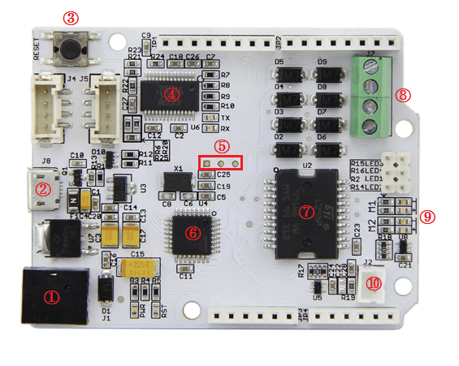
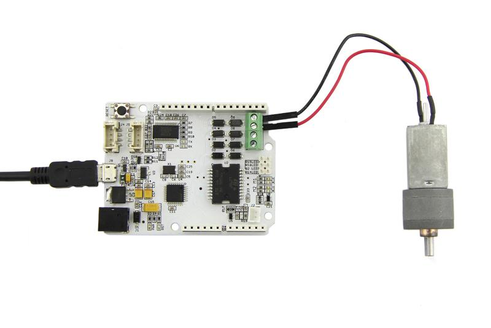
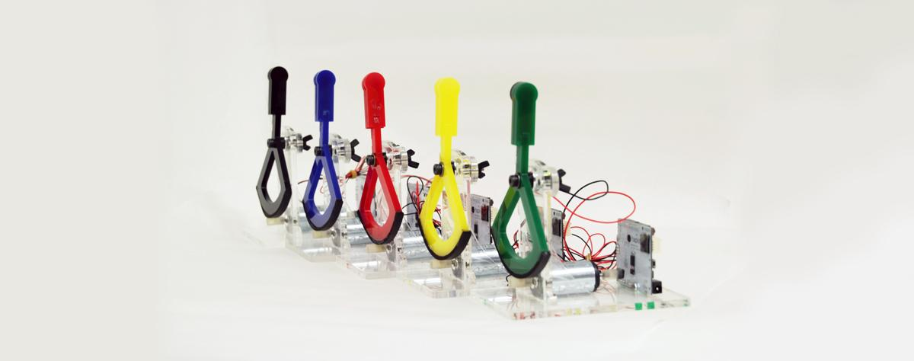

We worked with Stanford University to design Haptic. It merges a microcontroller Atmega328, Micro SD card Slot and Motor driver L298P, which can achieve this functions: control operation, data recording, motor driver. There are Hapkit-specific sensor connections: Mr Sensor connection and FSR Sensor connection. Standard Shield shape and Grove Interfaces, makes it convenient to connect more modules.
Its power can from Micro USB or 7v ~ 15v extern power. Only select extern power when you drive DC motors.

Like Motor Shield, Haptic features motor interfaces for connecting two DC motors. Next we will show you how to use the strong motor driver.
What you need are ：
Hardware Installation:

DC motor is connected to M1+ and M1- interfaces, because we select channel 1 to control motor in the belowing code. In fact, the hardware connection is changeable, make sure hardware connection and control pins in code are consistency.
Upload code:
Donot forget to select Arduino Uno from Tools->Board.
#define motorAEnble 5 // Motor A Enble pin
#define motorAControl 8 // Motor A Control pin
//#define motorBEnble 6 // Motor B Enble pin
//#define motorBControl 7 // Motor B Control pin
/*
* setup() - this function runs once when you turn your Arduino on
* We set the motors pin to be an output (turning the pin high (+5v) or low (ground) (-))
*/
void setup()
{
pinMode(motorAEnble, OUTPUT);
pinMode(motorAControl, OUTPUT);
//pinMode(motorBEnble, OUTPUT);
//pinMode(motorBControl, OUTPUT);
}
/*
* loop() - this function will start after setup finishes and then repeat
* we call a function called motorOnThenOff()
*/
void loop() // run over and over again
{
motorOnThenOff();
motorOnThenOffWithSpeed();
motorAcceleration();
}
/*
* motorOnThenOff() - turns motor on then off
*/
void motorOnThenOff(){
int onTime = 2500; //the number of milliseconds for the motor to turn on for
int offTime = 1000; //the number of milliseconds for the motor to turn off for
digitalWrite(motorAEnble, HIGH);
digitalWrite(motorAControl, HIGH); // turns the motor On
delay(onTime); // waits for onTime milliseconds
digitalWrite(motorAControl, LOW); // turns the motor Off
delay(offTime); // waits for offTime milliseconds
digitalWrite(motorAEnble, LOW);
}
/*
* motorOnThenOffWithSpeed() - turns motor on then off but uses speed values as well
*/
void motorOnThenOffWithSpeed(){
int onSpeed = 200; // a number between 0 (stopped) and 255 (full speed)
int onTime = 2500; //the number of milliseconds for the motor to turn on for
int offSpeed = 50; // a number between 0 (stopped) and 255 (full speed)
int offTime = 1000; //the number of milliseconds for the motor to turn off for
digitalWrite(motorAEnble, HIGH);
analogWrite(motorAControl, onSpeed); // turns the motor On
delay(onTime); // waits for onTime milliseconds
analogWrite(motorAControl, offSpeed); // turns the motor Off
delay(offTime); // waits for offTime milliseconds
digitalWrite(motorAEnble, LOW);
}
/*
* motorAcceleration() - accelerates the motor to full speed then
* back down to zero
*/
void motorAcceleration(){
int delayTime = 50; //milliseconds between each speed step
digitalWrite(motorAEnble, HIGH);
//Accelerates the motor
for(int i = 0; i < 256; i++){ //goes through each speed from 0 to 255
analogWrite(motorAControl, i); //sets the new speed
delay(delayTime); // waits for delayTime milliseconds
}
//Decelerates the motor
for(int i = 255; i >= 0; i--){ //goes through each speed from 255 to 0
analogWrite(motorAControl, i); //sets the new speed
delay(delayTime); // waits for delayTime milliseconds
}
digitalWrite(motorAEnble, LOW);
}
After uploading code, connect 12v power to extern power connection of Haptic(can unplug Micro USB), DC motor will rotate.
Note：while the current is flowing from M+ to M-, that is motorAControl and motorBControl are high level，the blue indictor lights. In contrast，green indictor lights up.
The Haptic was used as an educational device for learning and researching. click here to find more information.
